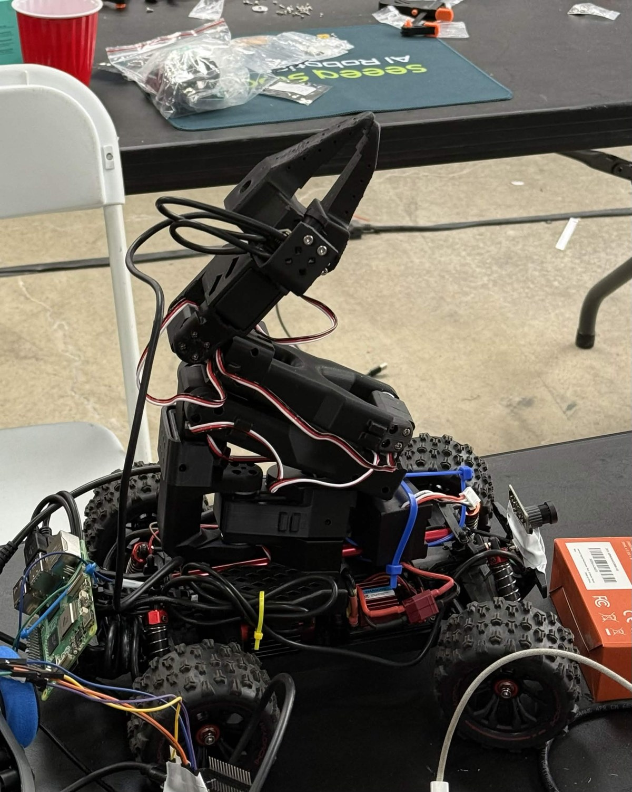
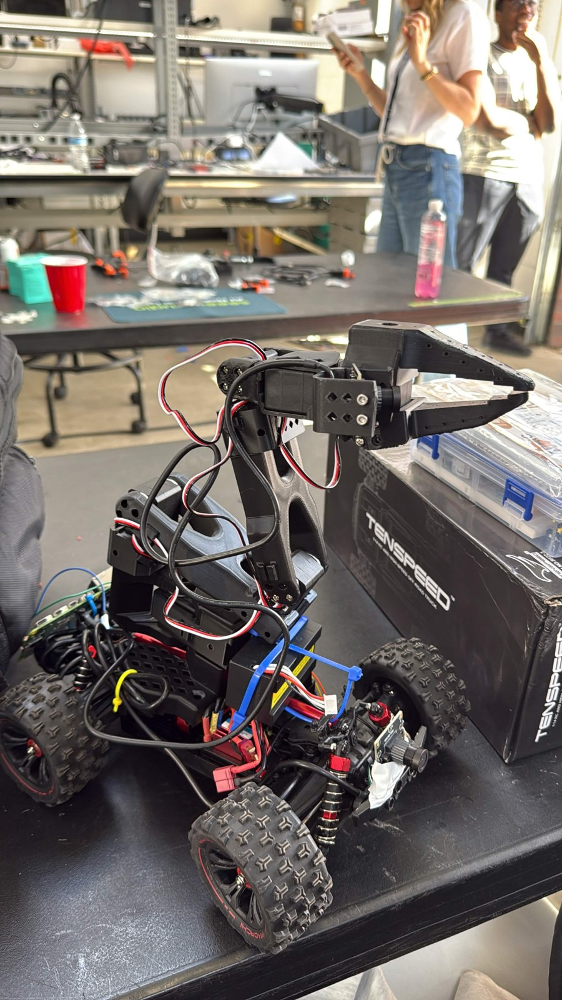

arm on wheels
RackHand
An SO-101 arm on an RC car. Drive it with a controller, guide its arm, and record the scene, wrist, and car views together.
- arm riding a car
- three cameras
- sticks turn the wheels
- a leader arm for the hand
- replays recorded commands
- driveacross the floor
- pickit up
- carryit over
- setit down


Recording and synchronized video replay are implemented. Hosted policy inference has passed a single non-actuating request; autonomous task success and physical command replay remain unverified.